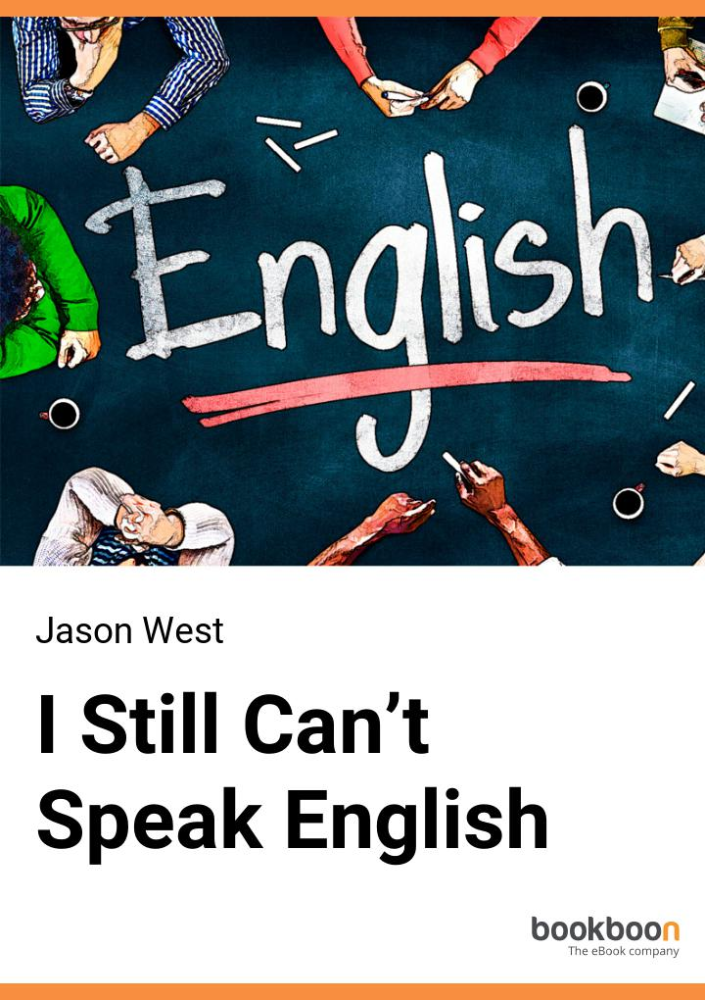
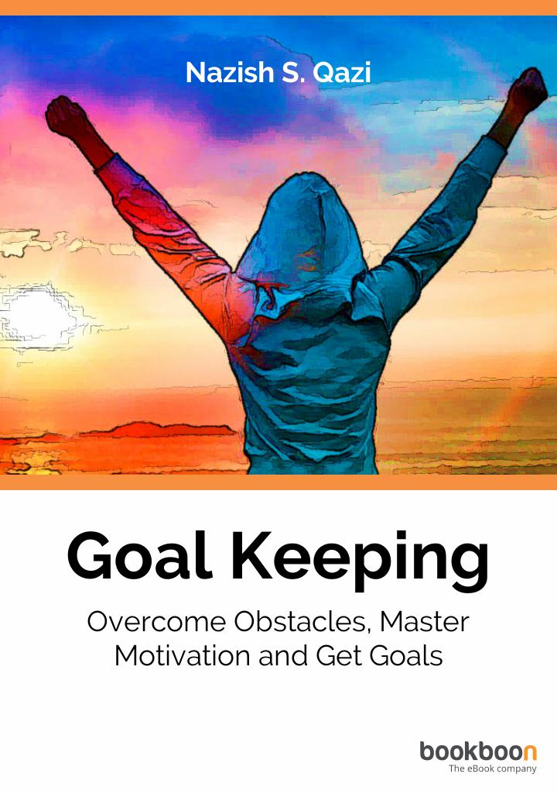
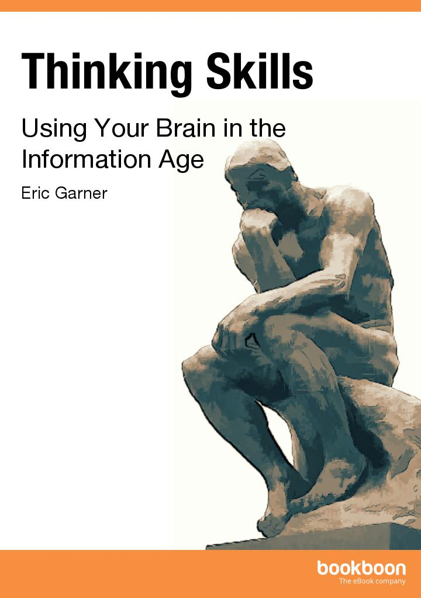

I Still Can’t Speak English
Jason West
Description
Read how you can finally learn to speak English quickly by curating your own free and hugely effective social learning and social media English course.
Follow the process and you will improve as much as the learners in the real case studies.
One, a typically frustrated adult Chinese English learner, went from beginner to intermediate after just 18 hours of practice.
Millions can read and write English but don't feel comfortable speaking it. They are trying to practise using Facebook, Google Plus, Skype and online language exchanges like Livemocha.com and Italki.com. They know they need to practise. But, effective practice is not as easy as most people think.
It requires proper preparation and process to be transformational.
Click here to Download

Goal Keeping -
Overcome Obstacles, Master Motivation and Get Goals
Nazish S. Qazi
Description
You don't like setting or having goals. It's never worked for you. Why put yourself under all that pressure? Goals are for highly driven people.
Or, perhaps you have tried to reach your goals but it's always been an uphill battle. You are resigned to thinking it's just a dream and can never come true... Or can it?
What if there was a secret method? Did you know that successful goal achievers use specific techniques? Learn how with this straight forward guide and simple, step-by-step tools.
Click here to Download
How to organize your work, home and life
Harold L. Taylor
Description
n general, organizing involves working with things and time management involves working with time. But the two are closely aligned, and it is sometimes difficult to distinguish between them. This book discusses both, with an emphasis on organizing your office, your home and your life in a way that optimizes your use of time.
Discussing the need and benefits of getting organized, the author provides step-by-step guidance in getting rid of the backlog and clutter, and setting up systems, tools and procedures that allow you to increase your personal effectiveness Ė both at and away from work.
He also includes organizing information for seniors whether they are retired or still in the workforce.
How to organize your work, home and life.
Click here to Download

Thinking Skills -
Using Your Brain in the Information Age
Eric Garner
Description
This eBook will cover all kinds of thinking skills and will make you see that your brain is the most powerful organ you possess. It is the tool that, if used skillfully, can help you perform better in your job, better in your team and better in your organization. By developing your thinking skills to meet the needs of the modern world, you are guaranteed to succeed.
Click here to Download